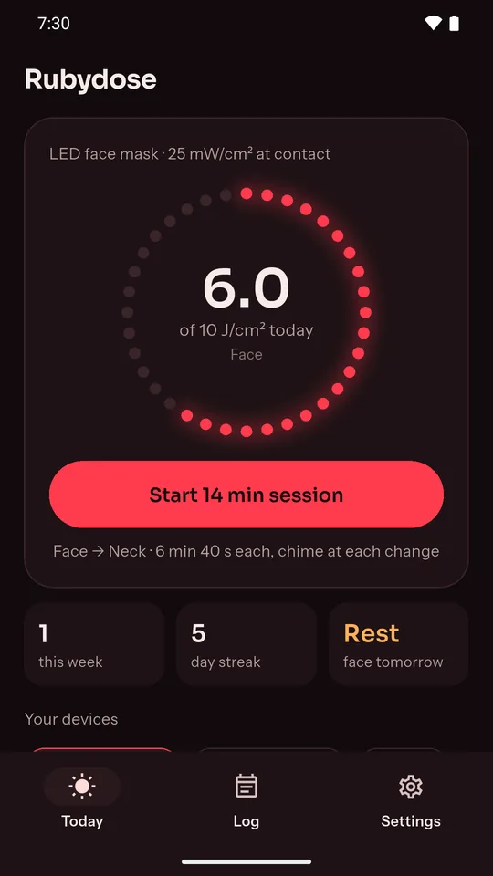
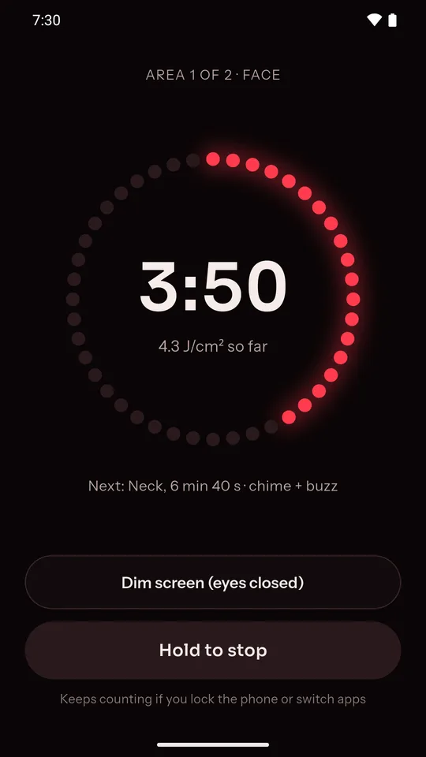
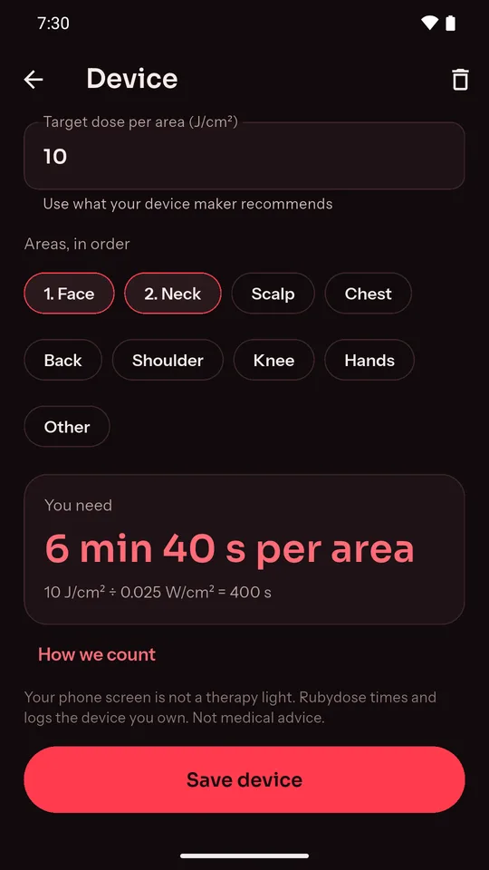
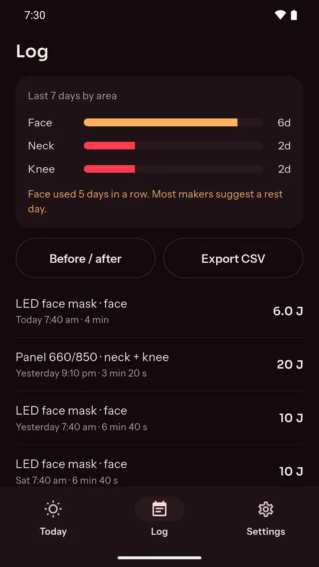

A red light therapy timer that knows your dose
Rubydose is a free Android app for the LED face mask, red light panel or wand you already own. Enter the numbers from its manual, and it works out the minutes per area, chimes when to move the light, and logs every session.
Get Rubydose on Google Play



Features
- Dose calculator. Irradiance (mW/cm²) and target dose (J/cm²) in, minutes per area out, with the sum written out.
- Eyes-closed timer. Areas in order, a chime and buzz at each change, dim mode, and hold-to-stop so a bump never ends a session.
- Keeps time when closed. Lock the phone or switch apps and the countdown stays right.
- Session log and rest nudges. Days per area this week, a streak, reminders, and a nudge after 4 days running on one area.
- Free, no account, offline. Sessions and progress photos stay on your phone.
See it in 25 seconds
More
Rubydose website · Privacy policy · Teaser on YouTube · More apps from NK Tools